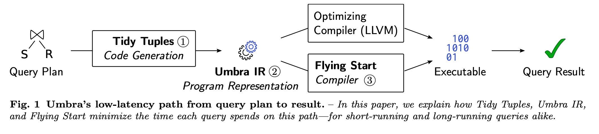

Tidy Tuples and Flying Start Fast Compilation and Fast Execution of Relational Queries in Umbra
怎么给Umbra设计更快的JIT执行引擎。tidy tuples是code generation framework, flying start是fast jit compiler. 看了个大概，里面细节许多，好多东西也没有完全看懂。tidy tuples的亮点就是有一种层次化框架的方法来给db engine来生成代码。生成的中间代码是umbra IR. 这个IR可以说是专门给DB engine设计的，并且是memory efficient representation. flying start则是相比llvm jit编译时间更短的引擎（但是代码效率就没有那么高），其中最大的优势还是简化了代码生成逻辑和直接生成x86代码。

关于代码生成部分我有些更新认知：我们没有办法去动态生成所有的代码，有些代码还是需要在编译时候就产生，动态生成的代码还是需要去调用这些C++代码。所以编译出来的C++代码需要包含一些proxy class, 可以被geneerated code来调用.
[!NOTE]
The proxy system is statically typed like the rest of Codegen and therefore offers a fully typed view of C++ classes. It does not need to be created or maintained manually. We generate proxies completely automatically during C++ compile time for a predefined list of classes and functions.
The proxy system has the valuable property that it reduces query compile time by incorporating precom- piled snippets, yet does not sacrifice peak execution performance. A function call from generated code into C++ is already quite cheap, as no marshaling is required
(as, e.g., would be necessary when using the JVM). It does, however, come at a slight cost at runtime because, e.g., register values must be saved, arguments trans- ferred, and the call stack managed. To avoid this call overhead, the proxy system allows that a programmer can mark functions to be inlined. The Flying Start back- end will ignore this inlining marker and only profit from lower compilation time. Our optimizing backend, which aims for peak performance, will react to the marker and inline the function at all call sites, thus removing any calling overhead. This mechanism provides an elegant way to implement functionality in C++, use it in gener- ated code, reduce code generation and compilation time, but without any runtime overhead.